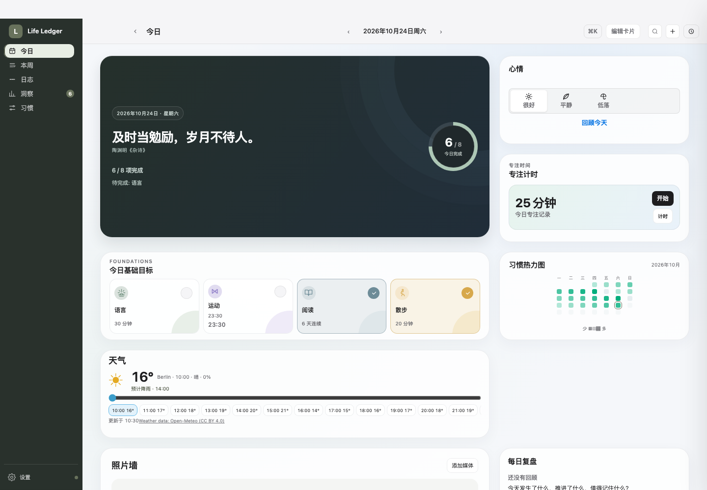
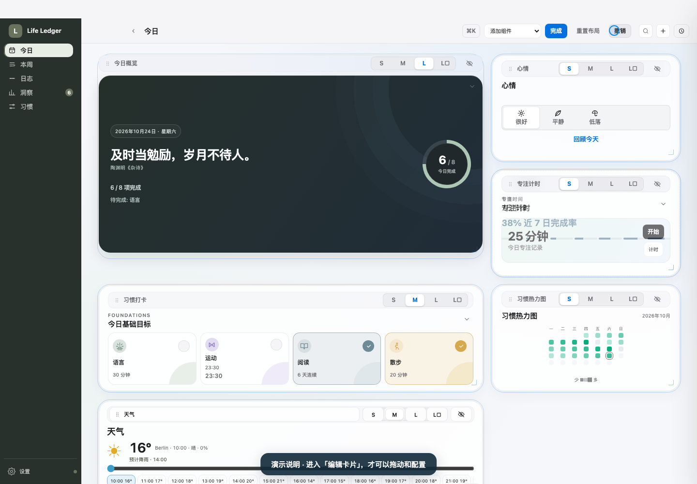
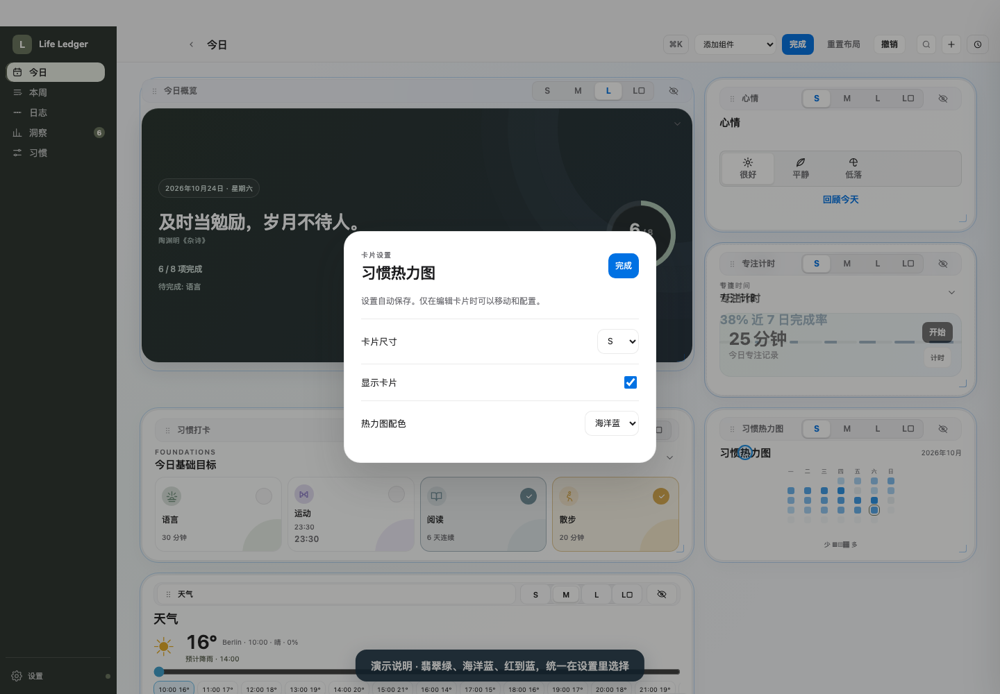

这是应用真实桌面页面的操作录屏，不是另外设计的示意动画。演示说明字幕与蓝色指针仅用于录屏标注；数据为虚构，天气为固定模拟预报。还没有打包或替换本地 App。
卡片固定，热力图按整月显示，只有小色点，没有常驻配色选项。打卡、记录、看天气等内容操作仍可正常使用。

进入编辑后才出现添加、拖动和尺寸操作；点卡片打开属于它自己的设置。拖动后不会误打开设置。

在设置面板选择尺寸、是否显示及该卡片独有选项。热力图可选翡翠绿、海洋蓝或红到蓝，天气城市也移入天气卡片设置。设置自动保存，按 Escape 只关闭面板，不退出编辑。
